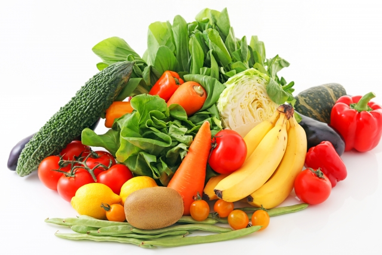

こだわり農家の
朝どりオーガニック野菜を
ご自宅で
「スグ食べ」は、厳選したオーガニック農家さんの穫れたて野菜を販売しています。
食材から選べるのはもちろん、生産者からも選べます。
生産方法や生産地、それぞれ異なるこだわりで、お気に入りの農家さんを見つけてください。最短で24時間以内に届く新鮮なオーガニック野菜宅配サービスです。
スグ食べが選ばれる3つの理由
-
farm-direct
本当の意味での産地直送
「なるべく収穫したばかりの状態で、野菜を味わって欲しい。」スグ食べでは、既存の産地直送サービスのように箱詰め用の倉庫を介すことはありません。農家が収穫したその日に、お客様の元へ直送で野菜をお送りします。
-
safe and secure
安心安全な無農薬野菜
出品している生産者は、有機栽培もしくは自然栽培の農家のみ。全ての商品が無農薬・無化学肥料など、安全にこだわって生産された「オーガニック農作物」です。そのため、どの商品も安心してお買い求めいただけます。
-
seasonable-vegetables
たくさんの旬な野菜との出会い
年間数十種の野菜を作る生産者から、今が旬の多様な野菜が届きます。スグ食べでは生産者ごとに商品が異なります。中には年間100種類もの多品種生産をしている生産者も。旬な野菜はもちろん、珍しい野菜とも出会えます。
スグ食べの品質保証
商品に不備があった際には、スグ食べが “全額” 返金対応します。

スグ食べに出品している農家さんたちは、「大切に育てた自慢の農作物を、できるだけ美味しい状態で食べてもらいたい。」そんな想いを持った農家さんばかりです。 そのため、収穫から梱包・出荷にいたるまでしっかりと品質管理されています。 とはいえ、実物を見ずに野菜や果物を購入するのはちょっと不安… そんな方にも安心してご購入いただけるよう、スグ食べでは品質保証をお約束しています。 万が一届いた商品に不備があった際には、スグ食べにて全額返金対応いたします。
こんな農家さんが登録しています
私たちの野菜、こんなにおいしいんです
安心安全なお野菜を、ご堪能ください
ひだまり農場 （岡山県） 山田洋一

「ひだまり農場」では栽培期間中に農薬・化学肥料を一切使用せず、年間約100種類の野菜と米、卵を生産しています。 堆肥・肥料もすべて手作りし、有機質のものを使用しています。
旬なお野菜を存分に楽しんでください
爽緑農園 太田紘一
「爽緑農園」では農薬や除草剤は一切使用せず、一つ一つのお野菜を丁寧に栽培しています。 お日様の光をたくさん浴びて育ったお野菜は、葉や皮まで余すことなく食べることができます。
１回限り！少量お試しセット
自信があるから、是非食べてもらいたい
-
【ベジックス】旬＊お試し野菜セット(6品目)
￥1,280（税込 / 送料別）
生産者：千葉県松戸市 ベジックス - 
【くちぶえ農園】旬＊お試し野菜セット(6品目)
￥1,280（税込 / 送料別）
生産者：長野県 飯田市 くちぶえ農園
よくある質問
-
Q. 産地直送のサービスってよく見るけど何が違うの？
A. 鮮度が抜群に違います。
通常の産直サービスは、一度倉庫などに野菜を集め、そこで箱詰め作業をして配送しています。この仕組みでは、お客様が商品を受け取る時には収穫してから3,4日が経過しています。スグ食べでは、箱詰め作業を農家さんにお願いすることにより、最短で収穫当日に商品を受け取ることができます。
-
Q. どんな農家さんが登録してるの？
A. 無農薬にこだわる、オーガニック農家さんのみが登録しています。
有機栽培や自然栽培などの環境に配慮した農法で生産するには、通常以上に費用も手間もかかります。そんな中でも、「安心な野菜を食べて欲しい」という強い思いを持って、こだわって野菜を作っている農家さんがいます。 そういった、厳選されたオーガニック農家さんのみが登録しているため、安心してお買い物を楽しんでいただけます。